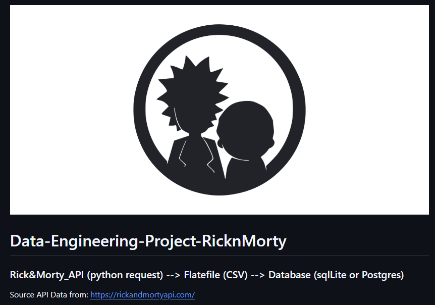

Arturo White
Data Engineering & Developer
As a data professional, I specialize in creating modular and scalable front-end (JS, Python, Reporting Tableau, etc...) or back-end data architectures. As such, I enjoy the challeges of blending various technologies together after gathering requirements.
I’m also constantly exploring more new and exciting developement techniques and languages in my freetime. Further, I enjoy interacting with various developer communities on slack, meetup, and the universities I have attend.
Currently in my spare time, I am learning about and working on several projects involving data engineering and AI (Multi AI Agent development, MCP Server development, and ML Engineering).
Featured Projects
View selected projects below. More information can be found at https://arturowhite17.github.io/.
Data Science & Machine Learning Project:
We ( Our Team Info ), created a machine learning model based on Random Forests which was used to predict within $75 the Fair Market Rent (FMR) for any location in the metro Atlanta area. The code for creating the ML model can be viewed at www.aahatl.com/ML.
Click here for main page: Achieving Affordable Housing in Atlanta - Data Science & Machine Learning ProjectData analytics - Dashboarding (Javascript & Python):

Custom Dashboarding project - Heath Analytics: Microbia belly button diversity. Project used HTML5, CSS3 (with bootstrap), Javascript, and Python (with Plotly library). A python flask libray app with Heroku server was used to deploy onto web to manage JSON data inputs.
Click here for main page: Ploty (Python) - Protfolio Health Analytics ProjectData ETL project - Health analytics comparison of cancer survivle rate vs income:

Data analytics proposal and hypothesis developed for exploring Kaggle, opensource health databases and APIs. Data was extracted and cleaned using Excel VBA & Pivot tables, and Jupyter Notebook (with pandas). Numpy and Plotly were used for aggregation and statistical analysis. A word document and powerpoint presentation of finds were submitted and presented to an audience of fell peers and data analyst.
Click here for main page: Data Extraction, Information, & Loading projectData Engineering project - API data pull to data store relational ETL:
Data engineering via data extraction batch full load and incremental loading from API source to flat file and finally relational structured database.
Click here for main page: Data Extraction, Information, & Loading projectWork Experience
See my complete work history on LinkedIn.
Project Manager & Data Analyst
Delta Air Lines
June 2022-Present
My primary responsibility are cloud infrastructure engineering and development for data pipelines in the CX (Customer Experience) domain for customer facing applications. Using mostly cloud development kit CDK, AWS serverless technologies, curation of customer data at needed levels of detail (LOD) and harnessing distributed compute or parallel processing to speed programs or data loading.
Sr. Analytics Engineer
Everbridge - Event management SaaS company
August 2021-June 2022
Enterprise BI & Data development activity across multiple business units such as: Data ingestion into enterprise warehouse (Airflow), AWS data pipeline (AWS Lambda, Glue, EC2, & S3), Embedded analytics with Tableau & Python, and web technologies (JS, CSS, etc...), Report automation & data cleaning, Product management with Jira & version control (Git), and Technical documentation using Confluence software.
Business Initiatives Consultant
Wells Fargo
November 2020-July 2021
Business Data Analyst & Technical support function, Oversees the completion on internal team metrics on a Bi-weekly, monthly, and quarterly basis. Business Intelligence Tools used: Excel for short term dashboard with Power Query for data cleaning/ connections and /PowerPivot for modeling (Dax), Tableau dashboarding for long term projects, and Salesforce data and visualization administration for customer data tracking.
Project Manager & Data Analyst
Gerresheimer - Medical Device Systems
January 2018-Present
Data Analyst activities supporting business decisions include but not limited to, Use of SQL to segment, transform, and extract Data from SAP ERP for Transformation and loading into monthly status reports and dashboards using Tableau & Excel.
Scientist I
Johnson & Johnson Inc.
October 2014 - December 2017
Technical writing and reporting within change management for maintenance and retention of data to support regulatory compliance efforts of site for all validations designed (DOE, ANOVA, T-Test).
Quality Control Laboratory Technician
Lawter Inc
October 2013 - October 2014
Automation of proprietary LIMS system with API using python & shell scripts, for development custom scripts and Python library integration, leading to customer dashboards and KPIs for chemical testing and sample tracking.
Education
Georgia Institute of Technology- Atlanta, GA
Full Stack - Data Science & Analytics Professional Post-Graduate Certificate, 2019
6 months program covering HTML, CSS, Python, Tableau, SQL, and JavaScript.
Benedictine University - Lisle, IL
Masters of Business Administration, 2016
Finance Focused
Fort Valley State University - Fort Valley, GA
Biotechnology, 2012
Computer Science - Minor, 2012
Skills & Technologies
My skills include, but are not limited to:
- Python (Pandas, Numpy, Flask, Plotly)
- Java (SE 11)
- JavaScript (Node.js, React.js, D3.js)
- SQL (PostgreSQL, MySQL, SQLite, Teradata)
- Data Visualization (Tableau, Power BI)
- Cloud Platforms (AWS, Azure)
- Version Control (Git, GitHub, Gitlab)
- CI/CD (Git Runner)
- Containerization (Docker)
- Linux (Redhat, BASH Scripting)
- Data Warehousing & ETL Processes (Batch loading & Streaming, Airflow, AWS Glue, S3, Snowflake, FTP)
- Agile Methodologies
Certifications
- AWS Developer – Associate - September 2022
- Snowflake Enterprise Data Warehousing - December 2021